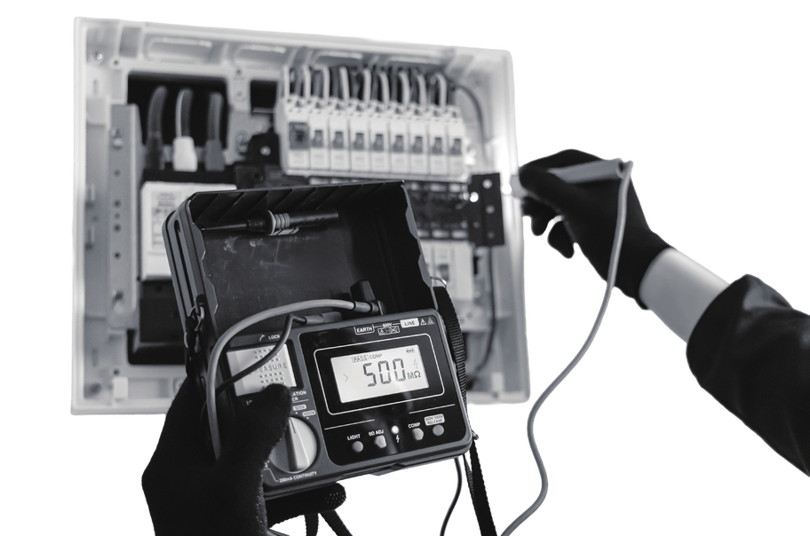
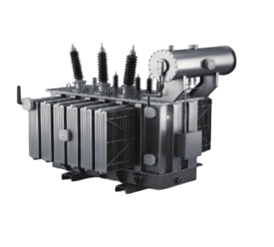
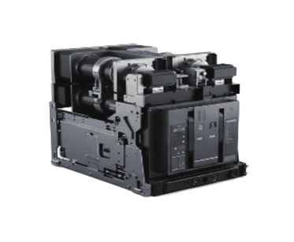

3줄 요약
- SEDA는 변압기·GIS 같은 전력설비의 신호를 실시간으로 수집하고 AI로 분석해 상태를 정상부터 심각까지 5등급으로 판정한다.
- 2021년 도입 이후 연평균 16건의 설비 고장을 미리 막았고, 누적 1,000억 원의 예산 절감 효과를 거뒀다.
- CES 2026에서 유틸리티 최초로 혁신상을 받았으며, 말레이시아 실증과 독일 MR사 협력으로 해외 진출을 넓히고 있다.
전기는 평소에 그 존재를 잊고 지내지만, 한순간이라도 끊기면 그제서야 얼마나 많은 것이 전기를 필요로 하는지 실감하게 된다.
산업 현장과 도시의 교통체계, 그리고 AI·데이터센터로 대표되는 초고밀도 전력 수요까지, 전력의 연속성은 국가 경쟁력 그 자체가 되었다. 발전소에서 만든 전기는 곧바로 가정으로 들어오지 않는다. 먼 거리까지 보내기 위해 전압을 올렸다가, 다시 우리가 쓰기 편리한 전압으로 낮추는 과정이 필요하다. 이때 전압을 바꾸고 전력 흐름을 제어하는 핵심 설비가 바로 송변전 설비이다. 송변전 설비가 멈추면 단순히 기계 한 대가 멈추는 게 아니라 사회 기능의 정지로 이어질 수 있기에, 전력설비 고장 예방의 중요성은 갈수록 커지고 있다.
하지만 현실적으로 설비는 노후화되고, 전력계통은 복잡해지며, 제한된 시간과 자원 안에서 한전은 더 많은 설비를 관리해야 한다. 사람의 경험만으로 모든 위험을 놓치지 않고 잡아내기 어려운 시대가 된 것이다. 그래서 한전은 실시간 전력설비 예방진단 솔루션인 SEDA를 활용해 고장 예방을 이어가고 있다.
SEDA는 무엇인가
SEDA는 ‘Substation Equipment Diagnostic & Analysis system’의 약자로, 전력설비 상태진단 · 분석 솔루션이다. 설비에서 발생되는 전력 데이터를 분석하여 이상 징후를 조기에 감지하고, 그 위험도를 분석해 이용자에게 정보를 제공한다. 변압기, GIS, 지중 송전선로와 같은 주요 설비는 운전 중 부분방전, 가스성분, 누설전류 등과 같은 내부 상태를 간접적으로 알려주는 신호를 만들어낸다. SEDA는 이러한 신호를 실시간으로 수집하여 설비제원, 점검이력 등 유지보수 데이터와 함께 AI 알고리즘을 통해 설비의 상태를 종합 판정하고 있다. 실제 전력계통을 운영하면서 축적한 약 200만 건의 빅데이터 가운데 3만 건의 핵심 데이터를 선별해 AI 알고리즘을 학습하는 데 활용하고, 실험실의 모의신호가 아니라 실제 데이터를 기반으로 알고리즘을 고도화하여 진단 및 판정의 정확도를 한층 끌어올렸다.
기존 방식의 한계점 보완

그동안 설비 관리는 주기적으로 점검하는 방식이 기본이었다. 이 방식은 기본적인 안전을 지키는 데 도움이 되지만, 점검 주기 사이에 생긴 문제는 대처하기 어렵다는 한계가 있다. 예를 들어, 점검을 완료한 다음 날부터 설비 내부에 작은 이상이 시작되어도 다음 점검까지는 발견이 늦어질 수 있다.
SEDA는 이 한계를 실시간 상태판정으로 보완하였다. 즉, 점검 시점의 데이터로 설비를 판정하는 것이 아니라 지금의 데이터를 기준으로 설비를 판정한다.
-
On-line예방진단 센서 데이터

변압기절연유중 가스, 부분방전, OLTC, 부싱 진단
개폐장치부분방전, 차단기 동작 특성
-
Off-line유지보수 정보
설비부하설비정보점검 데이터진단 데이터
-
실시간 상태판정
- 정상
- 관심
- 주의
- 이상
- 심각
- 실시간 전력설비 상태판정
- 점검 대상설비 선정(고장 예방)
- 교체-보강 연계 프로세스 구현
SEDA는 무엇을 하는가
SEDA의 핵심 기능은 크게 세 가지로 정리할 수 있다.
-
데이터 수집
변압기, 개폐장치 등 전력설비에 설치된 센서에서 실시간으로 발생하는 데이터를 수집한다. 여기에 설비 제원, 정보, 점검 데이터 등 유지보수 데이터가 함께 더해진다.
-
데이터 분석
수집된 빅데이터는 AI 알고리즘으로 설비 종합 판정을 하는 데 활용된다. 평소와 다른 변화, 악화되는 추세 등을 찾아내고, 그 결과를 사람이 이해하기 쉬운 형태로 보여준다.
-
사용자 중심 표시
복잡한 수치 대신 ‘정상·관심·주의·이상·심각’ 5등급 상태 표시로 우선 확인할 설비를 한눈에 파악할 수 있다. 이 방식은 고장이 발생하기 전에 원인을 파악하고 조치할 수 있게 하여 갑작스러운 설비 파손이나 대규모 정전으로 이어질 가능성을 낮춘다. 또한 긴급 복구를 줄여 비용도 절감하고, 안전사고 위험도 낮출 수 있다.
SEDA의 데이터는 단순 설비의 이상 유무를 판정하는 데 그치지 않는다. SEDA에서 판정하는 5등급 설비 상태는 전력설비의 투자 방안을 결정하는 데도 이용되는데 교체·보강의 우선순위를 정할지 판단할 때 SEDA의 설비판정 데이터가 중요한 근거로 활용되고 있다.
SEDA의 역사
SEDA는 하루아침에 만들어진 결과가 아니다. 1998년 GIS 부분방전 진단시스템으로 시작하여 2016년 변전소 종합예방진단시스템을 개발하였고, 2021년 실시간 AI 진단체계인 SEDA를 완성하여 세계 최고 수준의 전력설비 예방진단 및 상태판정 기술력을 확보했다. 이를 위해 GIS 부분방전 진단시스템에서 SEDA에 이르기까지 지난 30년간 산업·학계·연구 분야 누적 730명의 노력과 협업으로 예방진단 기술력을 완성할 수 있었다.
현장에서 확인된 성과
2021년 SEDA 도입 이후 연평균 16건의 설비 고장을 사전에 막아내며 원자력 발전소와 연계되는 전력설비의 고장을 예방하는 등 누적 1,000억 원의 예산 절감 효과를 거뒀다. 2025년에는 17건의 고장을 사전에 찾아냈고, 2026년 1월에는 신가평 변전소의 전력설비 내부결함을 사전에 적출하여 고장을 예방하였다.
신가평 변전소는 동해안에서 생성된 대규모 전력을 수도권에 공급하는 중요한 변전소이다. 만약 이곳에서 고장이 발생하면 수도권 지역의 전압 강하는 물론, 동해안 대규모 발전단지의 정지로까지 이어질 수 있다. SEDA를 통한 선제적 고장 예방이 비용 절감의 차원을 넘어 사회적 혼란을 방지하는 솔루션이라는 점이 여기서 드러난다.
세계가 인정한 기술력 : CES 혁신상
SEDA의 성과는 국내에만 머물지 않는다. 매년 1월 미국 라스베이거스에서 열리는 CES(Consumer Electronics Show)는 우수한 기술을 선발해 혁신상(Innovation Awards)을 수여한다. SEDA는 CES 2026에서 유틸리티로서는 최초로 혁신상을 수상하며 글로벌 전력시장의 이목을 집중시켰다. 이번 수상은 SEDA가 예방진단의 패러다임을 바꿀 혁신적 솔루션임을 글로벌 무대에서 공인받았다는 의미이다.

해외로 확장되는 SEDA
한전은 고도화된 진단 기술력을 바탕으로 국내외 전력기기 제작사와 협업을 통해 해외 시장 진출을 본격화하고 있다. 효성과 협업하여 개발한 ‘ARPS(예방진단·자산관리 통합솔루션)’는 2025년 12월에 말레이시아 실증사업을 성공적으로 마무리했다. 또한 2025년 9월에는 글로벌 전력기자재 선도 기업인 독일 MR사와 예방진단 사업화를 위한 MOU를 체결하여 2026년 상반기 기술이전 계약 체결을 목표로 협의를 진행 중이다. 이처럼 고도화된 진단 기술을 기반으로 세계 시장 확대를 지속적으로 추진해 나갈 계획이다.
SEDA가 추구하는 예방진단의 지향점은 더 많은 데이터를 수집하는 것이 아니라 더 나은 결정을 더 빨리, 더 정확하게 내리는 일이다. 설비의 이상을 선제적으로 발견하고 조치하여 현장의 안전과 계통의 신뢰도를 한 단계 끌어올리는 것, 그 과정에서 SEDA는 전력설비 예방진단의 최적 솔루션이 되고 있다.